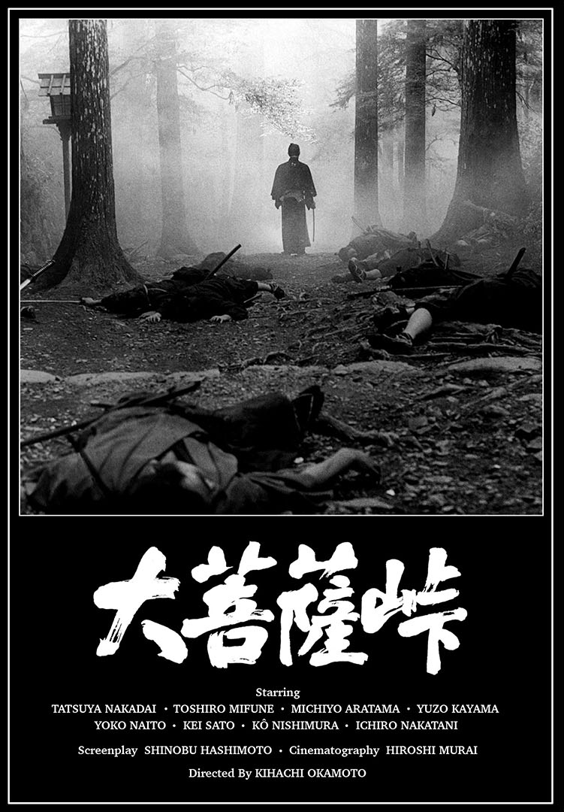

大菩萨岭
中里介山 著 · 白话重译版。
1.
大菩萨岭（甲源一刀流之卷）
共32章
2.
大菩萨岭（铃鹿山之卷）
共17章
3.
大菩萨岭（壬生与岛原之卷）
共17章
4.
大菩萨岭（三轮神杉之卷）
共20章
5.
大菩萨岭（龙神之卷）
共12章
6.
大菩萨岭（间之山之卷）
共19章
7.
大菩萨岭（东海道之卷）
共9章
8.
大菩萨岭（白根山之卷）
共9章
9.
大菩萨岭（女子与小人之卷）
共13章
10.
大菩萨岭（市中骚动之卷）
共15章
11.
大菩萨岭（驹井能登守之卷）
共10章
12.
大菩萨岭（伯耆安纲之卷）
共9章
13.
大菩萨岭（如法暗夜之卷）
共11章
14.
大菩萨岭（阿银小姐之卷）
共15章
15.
大菩萨岭（慢心和尚之卷）
共12章
16.
大菩萨岭（道庵与鳅八之卷）
共12章
17.
大菩萨岭（黑业白业之卷）
共20章
18.
大菩萨岭（安房之国卷）
共19章
19.
大菩萨岭（小名路之卷）
共16章
20.
大菩萨岭（禹门三级之卷）
共11章
21.
大菩萨岭（无明之卷）
共38章
22.
大菩萨岭（白骨之卷）
共28章
23.
大菩萨岭（他生之卷）
共33章
24.
大菩萨岭（流転之卷）
共28章
25.
大菩萨岭（迷途之卷）
共24章
26.
大菩萨岭（迷路之卷）
共33章
27.
大菩萨岭（铃慕之卷）
共16章
28.
大菩萨岭（大洋之卷）
共15章
29.
大菩萨岭（年鱼市之卷）
共67章
30.
大菩萨岭（畜生谷之卷）
共50章
31.
大菩萨岭（勿来之卷）
共100章
32.
大菩萨岭（弁信之卷）
共69章
33.
大菩萨岭（不破之关之卷）
共87章
34.
大菩萨岭（白云之卷）
共32章
35.
大菩萨岭（胆吹之卷）
共27章
36.
大菩萨岭（新月之卷）
共81章
37.
大菩萨岭（恐山之卷）
共200章
38.
大菩萨岭（农奴之卷）
共95章
39.
大菩萨岭（京之梦逢坂之梦之卷）
共61章
40.
大菩萨岭（山科之卷）
共77章
41.
大菩萨岭（椰子林之卷）
共77章